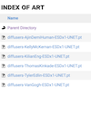
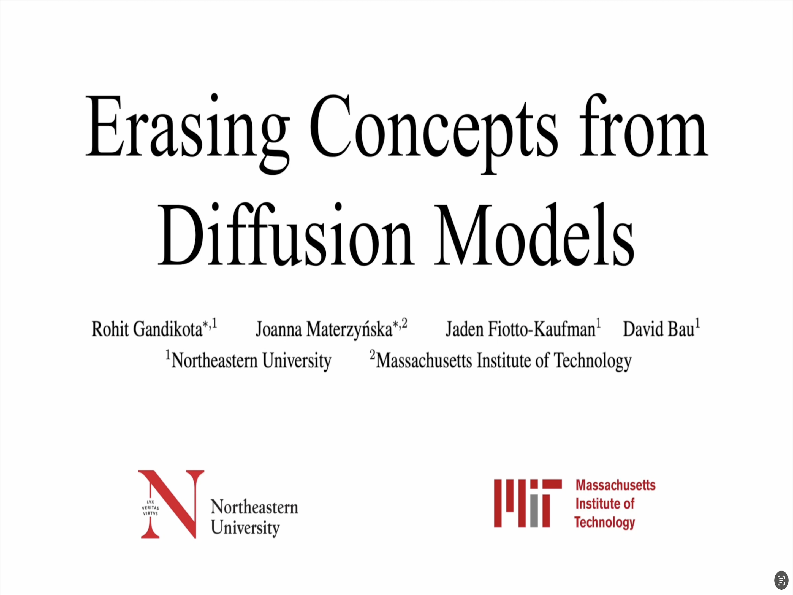

ArXiv
Preprint

Source Code
Github

Fine-Tuned
Model Weights

Huggingface
Demo

ICCV
Demo
ICCV
Poster
How to erase concepts from diffusion model weights?
With recent advancements in image generation quality, there is a growing concern around safety, privacy and copyrighted content in diffusion-model-generated images. Recent works attempt to restrict undesired content via inference methods or post-generation classification, but such methods can be easily circumvented when users have access to open-source weights.
In this paper, we propose a method for fine-tuning model weights to erase concepts from diffusion models using their own knowledge. Given just the text of the concept to be erased, our method can edit the model weights to erase the concept while minimizing the inteference with other concepts. This type of fine-tuning has an advantage over previous methods: it is not easy to circumvent because it modifies weights, yet it is fast and practical because it avoids the expense of retraining the whole model on filtered training data.

Why erase concepts from diffusion models?
Since large-scale models such as Stable Diffusion are trained to mimic vast training data sets, it is not surprising that they are capable of generating nudity, imitating particular artistic styles, or generating undesired objects. These capabilities have led to an array of risks and economic impacts: use of the models to create deepfake porn raises issues of consent and harrassment; their ability to effortlessly imitate artistic styles has led artists to sue, concerned about dire economic consequences for their profession; and their tendency to echo copyrighted or trademarked symbols indiscriminately has drawn another lawsuit. Such issues are a serious concern for institutions who wish to release their models.
There are methods to mitigate such content post-production or during inference, but they are easy to bypass. We propose fine tuning the weights for a small number of iterations using the text description of the targeted concepts to erase them permanently from the weights.
How to erase concepts from a model?
We use the encyclopedic knowledge of the model itself to unlearn a particular concept. Instead of collecting a new dataset of images corresponding to the concept that one intends to erase, we propose using the generative capabilities of the pre-trained model.
The idea is simple but powerful: the pretrained model Pθ*(x) already has the ability to model conditional probabilities for any named concept c, so our goal is to produce a new model Pθ(x) that reshapes its distribution by reducing the probability of any image in the conditional distribution, according to the original pretrained model:
This is similar to the motivation behind compositional energy-based models. In diffusion it leads to a straightforward fine-tuning scheme that modifies the noise prediction model by subtracting a component conditioned on the concept to erase:

What weights to edit?
Cross attention modules act as a gateway for text conditioning in the image generation process. Naturally, these attention heads activate when a certain set of tokens are present in the text prompt. In contrast, self attentions activate irrrespective of text conditioning, since they attend to the visual aspects a concept.
Inspired by this observation, we propose ESD-x, applying the erasing method to only fine tuning cross attention parameters while erasing a concept. That has a very narrow effect on the output distribution, focusing changes on conditions when the concept is explicitly mentioned in the prompt. Such finer effects are desirable in case of artistic style erasure, where some artists may wish to have their styles be preserved while others erased. We also study ESD-u, which is fine tuning all the unconditional layers (all layers except cross-attentions), which creates a generalised erasure of a concept that does not depend on the presence of specific words in the prompt; this is useful when removing NSFW output in a way that includes situations where NSFW terms are not used in the prompt.

Erasing an artistic style
We study artistic style erasure; our paper includes a user study where we measure compare the effects of using our method to erase an artistic style with other approaches including negative guidance and Safe Latent Diffusion. We also measure the interference effects of removing one style on other styles.
Erasing nudity
Since NSFW content can be generated without explicitly mentioning words such as "nudity", we apply ESD-u to fine-tune unconditioned parameters of the model. In our paper we compare our method to both inference-based guidance (Safe Latent Diffusion, SLS), and training-based censorship (Stable Diffusion v2.0 and v2.1), and find that our method is able to erase more inappropriate content.
Limitations
For both NSFW erasure and artistic style erasure, we find that our method is more effective than baseline approaches on erasing the targeted visual concept, but when erasing large concepts such as entire object classes or some particular styles, our method can impose a trade-off between complete erasure of a visual concept and interference with other visual concepts.
More results on artistic style erasure


More results on object erasure

Concurrent Work
Nupur Kumari, Bingliang Zhang, Sheng-Yu Wang, Eli Shechtman, Richard Zhang, Jun-Yan Zhu "Ablating Concepts in Text-to-Image Diffusion Models" arXiv preprint
How to cite
The paper appeared at ICCV 2023. It can be cited as follows.
bibliography
Rohit Gandikota, Joanna Materzyńska, Jaden Fiotto-Kaufman, David Bau. "Erasing Concepts from Diffusion Models." Proceedings of the 2023 IEEE International Conference on Computer Vision (ICCV 2023).
bibtex
@inproceedings{gandikota2023erasing,
title={Erasing Concepts from Diffusion Models},
author={Rohit Gandikota and Joanna Materzy\'nska and Jaden Fiotto-Kaufman and David Bau},
booktitle={Proceedings of the 2023 IEEE International Conference on Computer Vision},
year={2023}
}